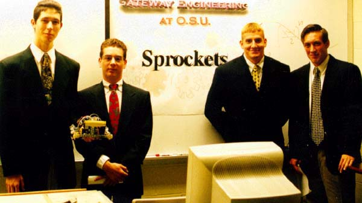
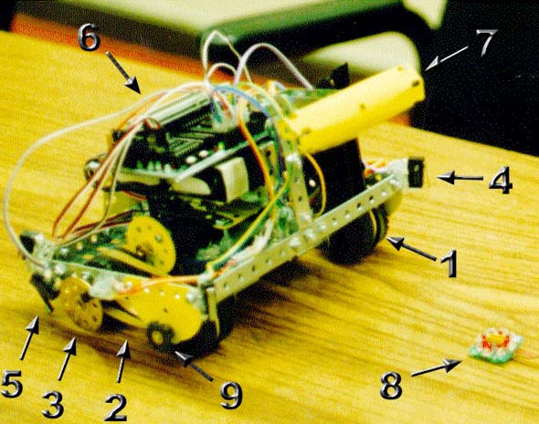
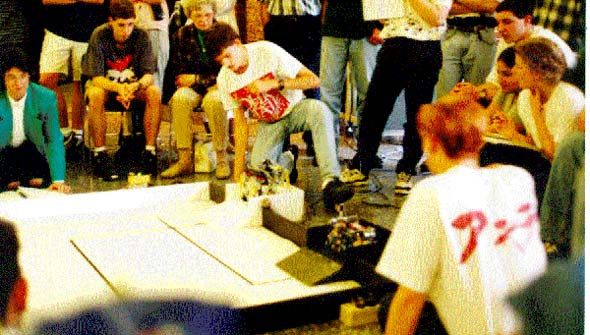
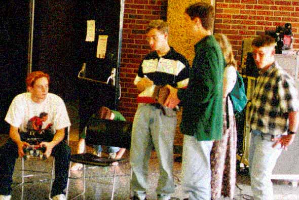
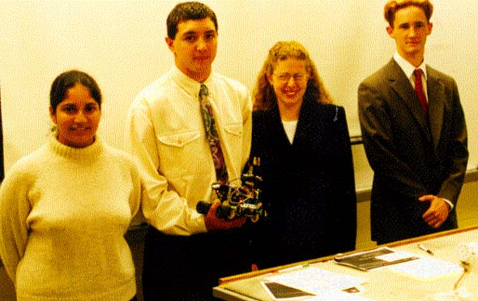
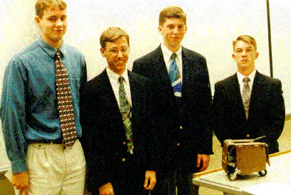

| Gateway freshman
year honors program. These
are pictures taken at the end of the third
quarter. The program culminated in a robot
competition. All robots were completely
autonomous (they ran all by themselves, just turn
them on and let them go). The Gateway Home Page.
][]-[o]-[][

Vince Scheib, Matt Kiener,
Ryan Andrews, and Bruce Isler made up team
'Sprockets'. We named our robot Deiter.
][]-[o]-[][

1. Front and back wheels have
a groove for a rubber band belt giving us 4 wheel
drive.
2. Spare rubber band belts are carried already on
the axles as instant backup.
3. Disk with holes and an infra red sensor (shaft
encoder) let's us determine distance traveled.
The program for the robot based all movements on
these distance measurements. So when the
batteries started to wear down, or when our robot
was turned by another robot, we knew it and could
correct.
4. Bump sensors let us know if we're touching a
wall, or another robot.
5. Bump sensors down here let us know if we've
encountered a ramp, or if we're tilted.
6. This is the Handy Board controller. It ran C
code and was the 'brain' of the robot.
7. This Bumper was used to push buttons which
were receded past a wall (We had to reach over
the top of the wall to push the button).
8. This is an infra red beacon. Two of these were
located in the course and our robot could
determine it's position by 'looking' for the
beacons. Our robot could successfully locate it's
position from any location in the open areas of
the course. (There is a maze section where the
walls block line of sight to the beacons, so it
didn't work there.)
9. We felt bad being team Sprockets and not using
any sprockets. So here they are, purley
decorative sprockets on the front wheels.
&. There are numerous things not as visible.
There is a light sensor underneath the robot,
which let us determine if we were on a white or
black surface, and also start the race when we
saw a bright light flash. We used two modified
servo motors for drive. The frame is made out of
erector set pieces. Careful planing made our
frame extremely stable, unlike most other teams
who had problems with erector set pieces bending,
flexing, loosening, &c.
Attitude - I programmed 3
'attitudes' into Dieter. Passive, Aggressive, and
Annoying. These determined if Dieter would attack
other robots or not. Annoying would blatantly
attempt to block the other robot. Aggressive was
a 'hit and run' strategy intended to disorient
the other robot and then continue on our way.
Passive attempted to avoid the other robot and
run the face faster.
][]-[o]-[][

This is the beginning third of the course. Robots
started in either white or black boxes. (The
robot did not know which one it started in, it
had to figure that out.) They would have to cross
to the opposite side, push a button which was
beyond a wall, then move to the maze. The maze
involved going up a ramp, then zigzagging through
a simple maze. The final portion of the course
was another open area. A third robot would run
about that area and our robots had to 'catch' it
by pushing buttons located on that robot.
Ryan Geiss [friend of mine]
is the guy in the bottom right with the reddish
hair.
][]-[o]-[][

Ryan Geiss, Paul Gemin, Joe Carter, some girl,
some guy. These are good friends of mine.
][]-[o]-[][

Team blahblah consisted of some girl, some guy,
Julie McNeil, and Ryan Geiss.
][]-[o]-[][

Team Vector was some guy, Paul Gemin, Joe Carter,
some guy.
Gateway was fun. I enjoyed
it considerably. Yay gateway.
|